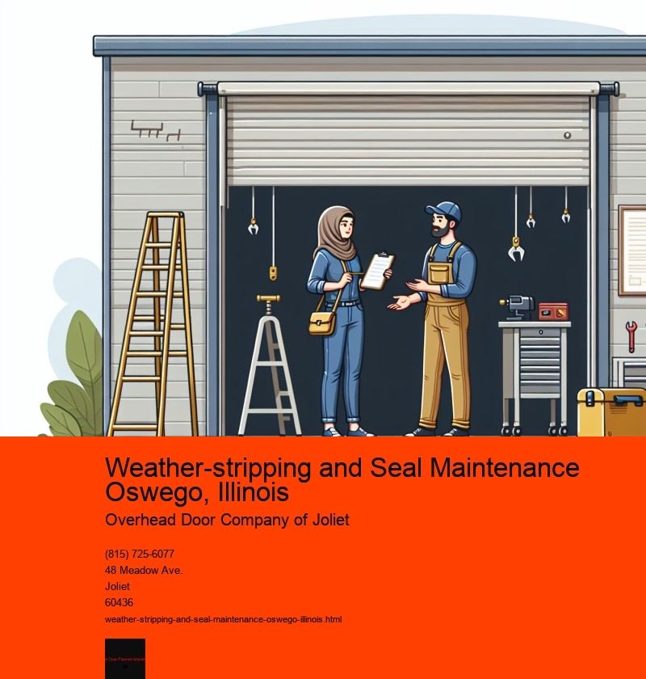

Weather-stripping and seal maintenance are crucial components of home upkeep, particularly in a place like Oswego, Illinois, where the climate can be both harsh and unpredictable. As the seasons change, residents of Oswego often experience a wide range of weather conditions, from the biting cold of winter to the sweltering heat of summer. These fluctuations make it essential to ensure that homes are properly insulated to maintain comfort and energy efficiency.
Weather-stripping refers to the process of sealing the movable components of a building, such as doors and windows, to prevent drafts, moisture, and dust from entering. Proper weather-stripping is a critical measure in reducing energy costs, as it helps to keep the desired indoor temperature stable without over-reliance on heating or cooling systems. In Oswego, where winter temperatures can dip significantly, a well-sealed home can prevent heat loss, which, in turn, lowers heating bills and ensures a cozy living environment.
Seal maintenance goes hand-in-hand with weather-stripping, focusing on the integrity of the stationary parts of a building, like walls, ceilings, and floors. Over time, seals around these areas can degrade due to wear and tear, exposure to elements, or simply the passage of time. Regular maintenance of these seals is vital to prevent water intrusion, which can lead to mold growth and structural damage. In a place like Oswego, where spring often brings heavy rain and occasional flooding, having a robust sealing system can protect homes from costly water damage.
The benefits of weather-stripping and seal maintenance extend beyond energy savings and protection from the elements. A well-sealed home in Oswego is also quieter, as it reduces the infiltration of outside noise, creating a more serene interior environment. Additionally, it helps in improving indoor air quality by minimizing the entry of pollutants and allergens, which is particularly beneficial for families with members who have respiratory issues.
For homeowners in Oswego, tackling weather-stripping and seal maintenance may initially seem like a daunting task, but it is one that pays off in the long run. Simple steps, such as inspecting and replacing worn-out weather-strips on doors and windows or re-caulking areas where seals have failed, can make a significant difference. Many of these tasks can be done as DIY projects, though professional services are also available for more extensive work.
In conclusion, weather-stripping and seal maintenance are essential practices for homeowners in Oswego, Illinois. They provide numerous advantages, including energy efficiency, comfort, and protection from environmental elements. By investing time and resources into these upkeep activities, residents can enhance their quality of life, safeguard their homes, and contribute to a more sustainable living environment. As the seasons change, taking proactive steps to ensure a well-sealed home will allow Oswego residents to enjoy the best of each season with peace of mind.
Inspecting Bottom Seal Oswego, Illinois
